Description Of Handcuffs
Description
This section is from the book "Secrets Of The Great Mysteries", by Oudini. Also available from Amazon: Secrets Of The Great Mysteries.
Description Of Handcuffs
Until about five years ago, people who were not particularly interested in the subject or who had no connection with police methods were entirely unfamiliar with handcuffs. To-day, however, owing to the public exhibitions of handcuff kings, who make their escape from any handcuff presented to them, the public has become more used to the appearance and working of them, and often the make of the more common ones can be recognized. So the subject is not so mysterious as it was formerly. The methods of escape, however, have been very mystifying until now, when we propose to tell just how the trick is done. This will be found in this book under "Handcuff Manipulation".
We will here describe a few forms of handcuffs which are shown in the accompanying pages. The figure eight cuff comes from England. This cuff is named from its peculiar shape, and is made in one piece, having only one lock instead of two, as the Darby cuffs have. One variety of this cuff is in general use in Ireland.
You will sometimes see a handcuff king, when placed in a pair of handcuffs, remove them easily by striking them a sharp blow on his boot heel or other hard object, without taking the trouble to retire to his cabinet. This can be done with some of the English cuffs, but cannot done with other makes, as for instance the German cuff known as the Stotz. This is the only type of German cuff generally known or used in this country. The lock is similar to the Darby cuff, but it is lighter and of finer finish than the English cuff.
The leg irons known as the Lilley iron is very unusual in shape, and, as can be seen from the cut, very effective. It was invented by a sergeant of marines in the U. S. army, but who was really a Frenchman, during the civil war. This pattern of leg Irons was used in the confederate prisons during the war on Union prisoners. A curious fact is that the inventor, while under temporary restraint, died in a pair of his own irons.
An interesting variety of cuff is known as the thumb cuff, and is used as its name suggests. This type is not new. It was used in the Bastille during the French Revolution on political prisoners. A later type of this cuff was invented by Captain Bean of the Boston police force, who also invented the cuff known as the Bean Giant, which we show and describe in another place. The thumb cuff is very small and light, and at first sight it would not appear to be very effective, but when placed on it will hold the most powerful prisoner, for all his efforts only make it tighter, and he has no way to use his strength in removing it.
The Darby cuff, which has been mentioned, is an English cuff. They were formerly in general use all over the world, especially on shipboard, but have now been mostly replaced by lighter and more modern styles. They are opened by a large key, which must be turned a certain number of times in one direction, and then pulled in another. It takes some time to open them, but, on the other hand, they may be opened by striking the hinge sharply against a solid substance, as mentioned above.
The cuffs of American invention are more numerous and show more ingenuity than those of any other country.
A Few Pairs Of Modern And Antique Handcuffs. Nippers And Twisters, With Picks And Keys
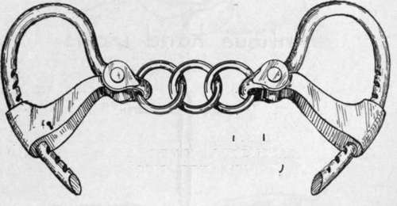Tower parent. Double lock handcuff.
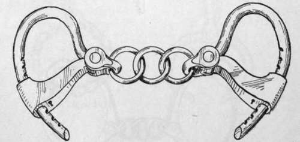Bean Cuff, Rare.
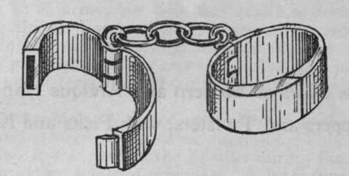Àntique hand irons.
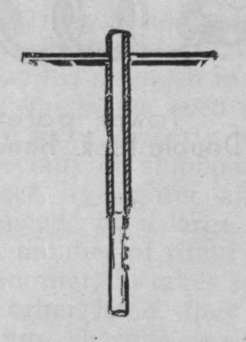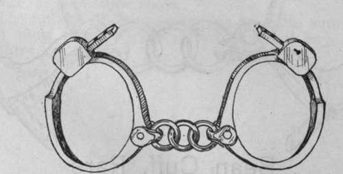Tower single lock handcuff.
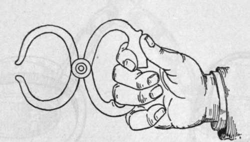Blakcleeyss Police nippers.
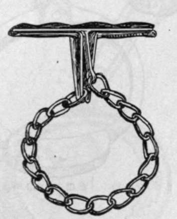Chain twisters.
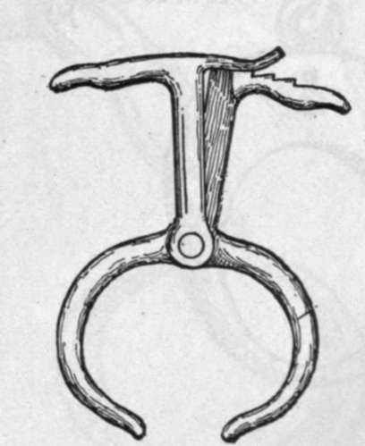Phillips, nippers.
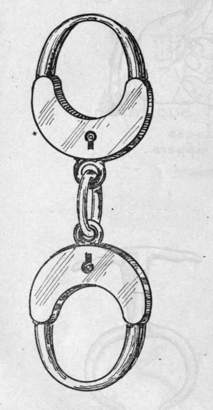Romers handcuff.
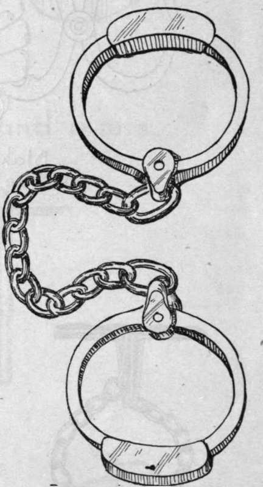Bean leg irons.
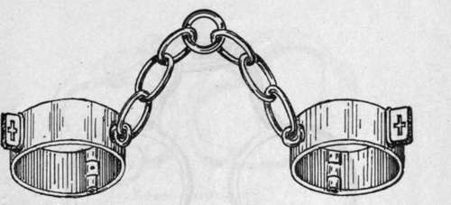Antique leg irons.
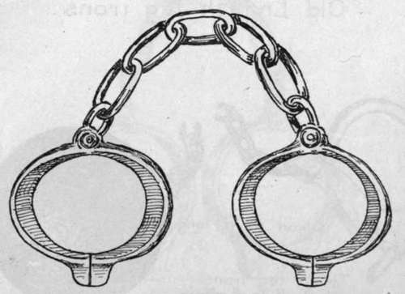Antique leg shackles.
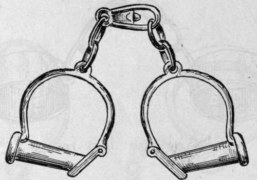Old English leg irons.
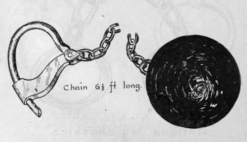Tower leg irons with boll and chain.
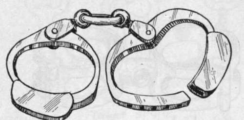Bean handcuff.
Rankîn Patena U. S.Navy leg irons.
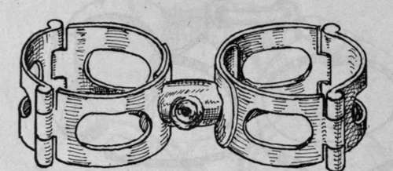Palmers. Navy hand & leg irons.
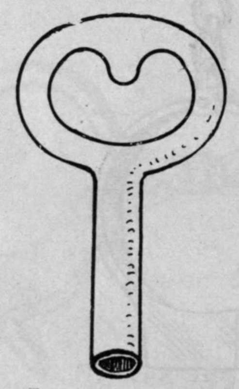English cuff.
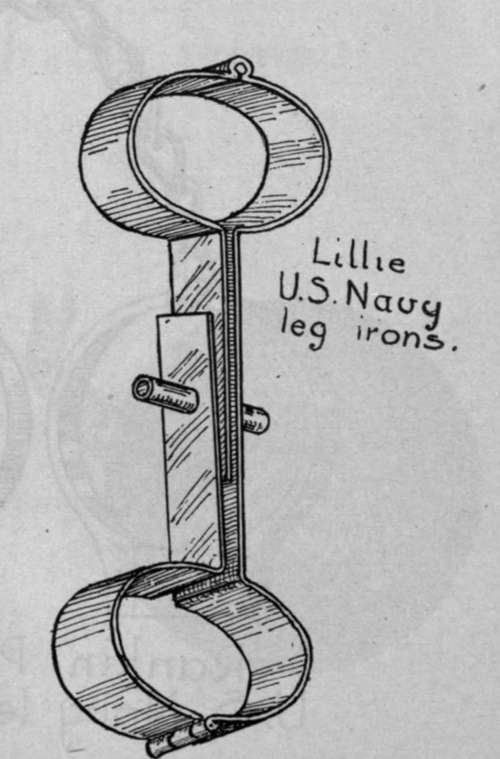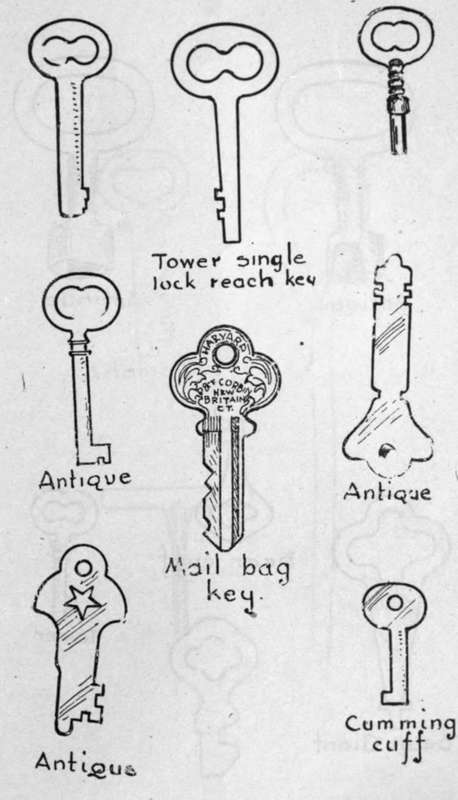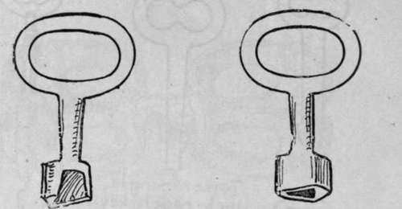Antique.
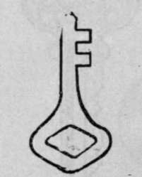Bean cuff.
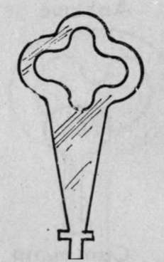Bean Giant.
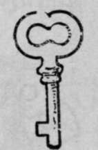Tower.
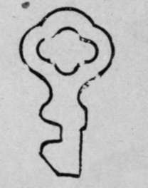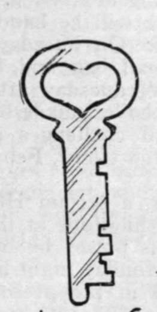Adams Cuff.
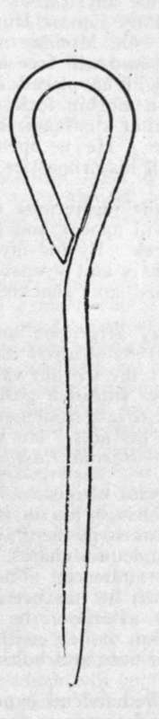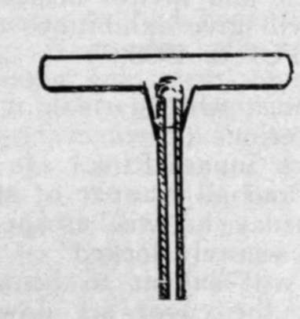
Continue to: